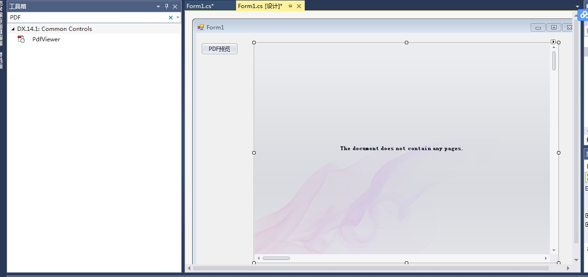

原文出处:本文由博客园博主霸道流氓提供。
原文连接:https://www.cnblogs.com/badaoliumangqizhi/p/11417303.html
原文连接:https://www.cnblogs.com/badaoliumangqizhi/p/11417303.html
场景
Winform控件-DevExpress18下载安装注册以及在VS中使用：
https://blog.csdn.net/BADAO_LIUMANG_QIZHI/article/details/100061243
参照以上将DevExpress安装并引进到工具箱。
这里使用的是VS2013所以安装的DevExpress是14版本。
DevExpress14以及注册机下载
https://download.csdn.net/download/badao_liumang_qizhi/11608734
效果
0.png)
实现
项目搭建
新建winfom程序，然后拖拽一个Pdfvieerr控件。然后添加一个Button按钮。

PDF打开与预览实现
双击进入Button按钮的点击事件中
private void simpleButton2_Click(object sender, EventArgs e)
{
//打开pdf文件，并获取文件路径
string filePath = FileDialogHelper.OpenPdf();
//如果不为空
if (!string.IsNullOrEmpty(filePath))
{
//加载预览 其中pdfViewer1 与控件的name相对应
this.pdfViewer1.LoadDocument(filePath);
}
}
然后新建FileDialogHelper工具类，实现选择打开文件并返回路径的功能。
using System;
using System.Collections.Generic;
using System.Linq;
using System.Text;
using System.Threading.Tasks;
using System.Windows.Forms;
namespace PDFExport
{
class FileDialogHelper
{
public static string OpenPdf() {
OpenFileDialog fileDialog = new OpenFileDialog();
fileDialog.Multiselect = true;
fileDialog.Title = "请选择文件";
fileDialog.Filter = "所有文件(*pdf*)|*.pdf*"; //设置要选择的文件的类型
if (fileDialog.ShowDialog() == DialogResult.OK)
{
return fileDialog.FileName;//返回文件的完整路径
}
else {
return null;
}
}
}
}
PDF另存为实现
在窗体上再拖拽一个Button，双击进入其点击事件中。
private void simpleButton1_Click_1(object sender, EventArgs e)
{
this.pdfViewer1.SaveDocument(@"D:\PDF\A.pdf");
}
注：
调用自带的SaveDocument()方法，这里传递的是保存的路径。
其还有个重载方法：
public void SaveDocument(Stream stream);
效果
2.png)
打印PDF实现
再拖拽一个按钮，双击进入其点击事件中。
private void simpleButton3_Click(object sender, EventArgs e)
{
this.pdfViewer1.Print();
}
效果
源码下载
https://download.csdn.net/download/badao_liumang_qizhi/11617199